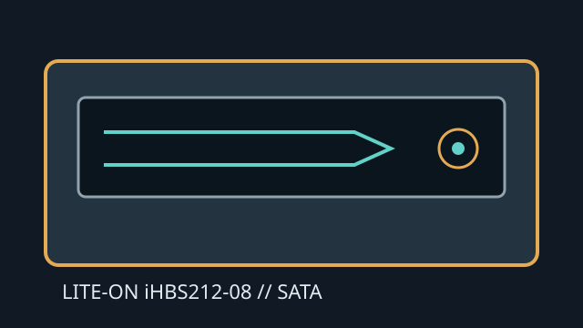

[ INTERNAL BLU-RAY WRITER ]
Lite-On iHBS212-08
Internal SATA 12× Blu-ray writer with CD/DVD writing and support for LightScribe-labelled discs. LightScribe operation requires its compatible media and software.

IDENTIFICATION: Lite-On iHBS212-08; retain its full suffix when checking Lite-On model and firmware data.
Documented specifications
| Media read/write formats | Reads BD-ROM, BD-R/RE, DVD-ROM, DVD±R/RW, DVD±R DL, DVD-RAM and CD-ROM/R/RW. Writes BD-R/RE, DVD±R/RW, DVD±R DL, DVD-RAM and CD-R/RW. LightScribe is a labeling feature, not an optical write format. |
|---|---|
| Maximum speeds | BD-R up to 12× (single layer), BD-R DL up to 8×; BD-RE up to 2×; BD-ROM up to 8× read. DVD±R up to 16×, DVD±R DL up to 8×, DVD-RAM up to 12×; CD-R up to 48× and CD-RW up to 24×. |
| Interface and physical bay | Internal 5.25-inch half-height tray-loading SATA drive with separate SATA data and power connections. Confirm bay clearance, bezel and mounting alignment. |
| Host and firmware compatibility | Requires SATA host-controller and OS support for optical ATAPI devices. Playback software and codecs are separate. Use compatible LightScribe software/media if using disc labeling; apply only matching iHBS212-08 firmware. |
Manual and technical sources
- Lite-On iHBS212-08 product listingModel-specific manufacturer-distributed product/specification listing.
- Lite-On optical-drive manual archiveManual archive for legacy Lite-On drives; use model-specific documentation for exact revisions.
- Lite-On manuals archiveManual index for product-document discovery; check the complete iHBS212-08 label.
Product listings and reviews are secondary documentation; confirm capabilities against the exact unit and disc media.